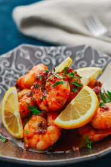

HoneyGarlicPrawn

Description
Honey Garlic Prawns is a fast, flavour-packed dish where plump, juicy prawns are seared until golden and coated in a sticky, sweet-and-savoury glaze. Made with simple pantry staples—golden honey, plenty of freshly minced garlic, soy sauce, and a splash of lemon juice or vinegar—the sauce bubbles down into a rich, glossy coating that clings to every bite without overpowering the natural sweetness of the seafood.
Ready in under 15 minutes from start to finish, it is the ultimate weeknight dish that still feels special enough for guests. Served over steamed jasmine rice or alongside stir-fried greens with a sprinkle of toasted sesame seeds and spring onions, it delivers a restaurant-quality balance of caramelised sweetness, savoury umami, and bright acidity.
Ingredients
- 400g large prawns, peeled and deveined (tails left on or removed)
- 3 tablespoons honey
- 1.5 tablespoons soy sauce
- 1 tablespoon lemon juice or apple cider vinegar
- 1/4 teaspoon crushed red chilli flakes (optional, for subtle heat)
- 1/4 teaspoon freshly ground black pepper
- 1.5 tablespoons olive oil or unsalted butter
- 4 to 5 cloves garlic, finely minced
- 1 teaspoon fresh ginger, finely grated (optional)
- Salt to taste
- Toasted sesame seeds and chopped spring onion greens, for garnish
Steps
- Mix the glaze: In a small bowl, whisk together the honey, soy sauce, lemon juice, red chilli flakes, and black pepper until smooth. Set aside.
- Prep the prawns: Pat the prawns completely dry with a paper towel and season lightly with a pinch of salt and black pepper (drying them ensures a good sear instead of steaming).
- Sear the prawns: Heat the oil or butter in a wide skillet over medium-high heat. Place the prawns in a single layer and sear for 1.5 to 2 minutes per side until they turn pink and lightly golden, then transfer them to a plate.
- Sauté the aromatics: Lower the heat to medium, add the minced garlic (and ginger, if using) to the same pan, and sauté for 30 seconds until fragrant without letting the garlic burn.
- Simmer and coat: Pour the honey-soy mixture into the pan and let it bubble for 1 minute until slightly thickened. Return the prawns to the pan and toss quickly for 30 seconds until every prawn is evenly glazed.
- Garnish and serve: Remove from heat, sprinkle with toasted sesame seeds and spring onion greens, and serve immediately over steamed rice.
Home